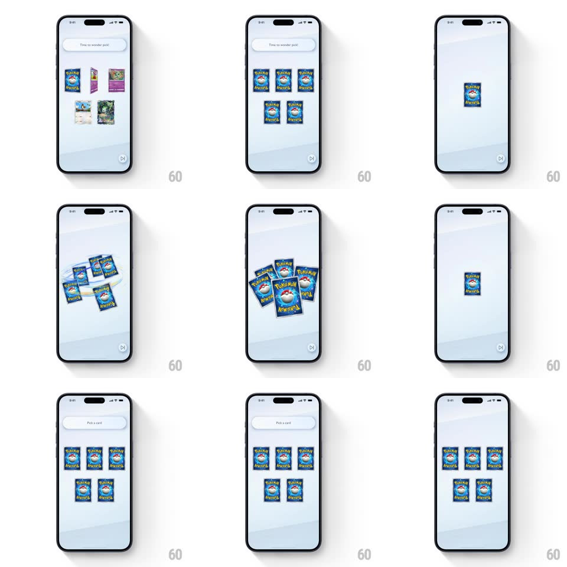

Media
Frame-by-frame

Rebuild this interaction 1:1: Pokemon TCG Pocket's wonder pick shuffle - five face-up cards flip to their backs, fly into a central stack, spin and shuffle through each other, then fan back out face-down into the 3-over-2 pick grid under "Pick a card!".

Rebuild this interaction 1:1: Pokemon TCG Pocket's wonder pick shuffle - five face-up cards flip to their backs, fly into a central stack, spin and shuffle through each other, then fan back out face-down into the 3-over-2 pick grid under "Pick a card!". ## Integration Integration: stack-agnostic spec - springs given as stiffness/damping, timed motions as duration + curve; map every value to your framework and animation library of choice. ## Scene Pale stage with a "Time to wonder pick!" bubble pill at top: five cards shown face-up in a 3-over-2 grid. After the shuffle, the same grid shows five face-down Pokemon card backs under "Pick a card!". ## Motion spec Pattern: gather-shuffle-fan sequence. - Flip: all five cards flip to their backs in a quick stagger (rotateY 0 -> 180, 300ms each, 60ms apart, top row first). - Gather: the cards fly to center and stack (each on a short arc, 300ms, ease-in, landing with a tiny stack offset of 2-3px per card). - Shuffle: the stack splits and interleaves - cards dart out in alternating directions and restack (3-4 quick exchange motions, ~120ms each, with rotation +/-10deg in flight), reading as a rapid riffle. - Fan out: the cards fly back to their grid positions face-down (arcs out, 350ms, ease-out, staggered 50ms bottom row first), each landing with a small settle bounce. - The header bubble swaps "Time to wonder pick!" -> "Pick a card!" as the fan-out begins. ## Calibration - Total sequence ~2s - brisk magic-trick energy, no dead time between phases. - Every card follows its own arc - no two cards share a flight path. ## Reduced motion Cards flip, crossfade to stacked, crossfade to grid. ## Don't miss - The stack during shuffle is slightly messy - small rotations and offsets, like real cards, never a perfect deck. - Cards cast soft shadows on the stage that track their flight height.